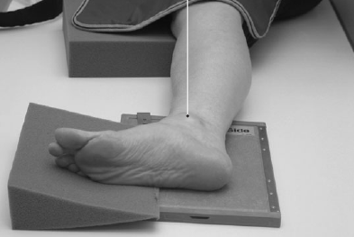

Ankle(Lateral)
Centering point:Directed to the medial malleolus
Perpendicular to the cassette

Cassette Size:24cm x 30cm (10 x 12 ins)
Portrait
Exposure Factors:60kVp on
3.2MaS
FFD:100cm
Bucky/Grid:No
Filter:No
Collimation:Centre: The medial malleolus
Shutter A: Open to include the distal third of the tibia and fibula & the calcaneus
and proximal metatarsals
Shutter B: Open to include the calcaneus, proximal metatarsals,anterior and posterior skin margins
Pathologies:Displacement of the anterior pretalar fat pad or the posterior pericapsular fat pad indicates joint effusion
Position of patient and cassette
- Patient is recumbent
- Rotate the leg and foot of the affected side so that the lateral foot surface is parallel to (and against) the cassette
- Leg can be bent approxiately 45° for patient comfort, or done with a straight leg
- The lower leg should be parallel to the table in most cases, however if not, then the foot and IR can be elevated on sponges to achieve this desired position
- Ask the patient to dorsiflex their foot, if possible, so that the plantar surface is at 90° to the lower leg. (This will best show the anterior pretalar fat pad)
- Position the plantar surface so it is perpendicular to the lR
- Align ankle so malleoli are superimposed
Critique:
- Positioning
- The talar domes are superimposed
-
The tibiotalar joint space is shown open
-
The distal fibula is superimposed by the posterior tibia
-
Area Covered
The distal third of the tibia and fibula, navicular, cuboid, base of the 5th metatarsal, calcaneus are visualised
-
Collimation
- Centre: The medial malleolus
- Shutter A: Open to include the distal third of the tibia and fibula & the calcaneus
and proximal metatarsals
- Shutter B: Open to include the calcaneus, proximal metatarsals,anterior and posterior skin margins
Exposure-
Bony trabecular patterns and cortical outlines are sharply defined
-
Soft tissues are visualised
-
Correct contrast and density to show the fat pads of the foot and ankle (posterior pericapsular and anterior pretalar fat pads)